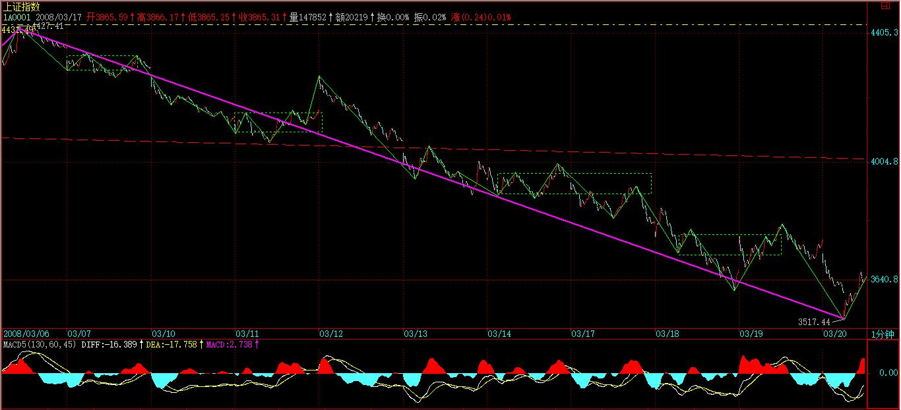
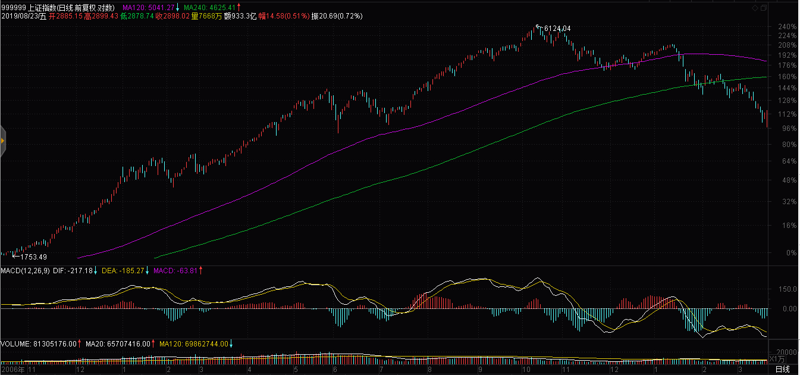

(2008-03-19 15:58:15)
似乎有人嫌本ID的课程太慢，而世界上最多就是这种人，100多课，估计里面任何一课都没真正弄懂，就嫌课程太慢？如果你真正弄懂其中任何一课，也不至于在实际操作灰头土脸了。
学屠龙术前先学好防狼术吧，本ID看现在绝大多数是连防狼术都没过关，大盘稍微来点劲，就会被大盘严重侵犯。
在没彻底下面所说的防狼术之前，你也别研究什么中枢、级别的了。因为有了这防狼术，至少不会被大盘严重侵犯，也不会在大盘大跌时鬼哭男嚎了。
这防狼术，其实在上面的课程都有提及，这里再一次综合地总结。看好了。
就一个最简单MACD指标，0轴分为多空主导，也就是说，一旦MACD指标陷入0轴之下，那么就在对应时间单位的图表下进入空头主导，而这是必须远离的。
各位请自己去看看大盘的60分钟图，【韶山映山红】“60分钟图”对应超短线。★】5200点MACD跌破0轴并反抽确认后，一直到现在3000多点，一直就在0轴下晃悠，其间产生多大的杀伤力，各位自己难道没有体验吗？【韶山映山红】两次回拉0轴都没有反弹，引发更剧烈下跌。】
回避所有MACD黄白线在0轴下面的市场或股票，这就是最基本的防狼术。【韶山映山红】舍不得孩子套不着狼。防狼也就意味着，放弃背驰一买的操作，做二买或者三买。】
当然，这涉及时间周期，例如，如果是1分钟，那就经常在0轴下又上的。这里，你可以根据自己的能力，决定一个最低的时间周期，例如：60分钟图上的或30分钟图上的，一旦出现自己能力所决定的最低时间周期的MACD0轴以下情况，就彻底离开这个市场，直到重新站住0轴再说。【韶山映山红】这个防狼级别和操作级别是什么关系？以后研究★★】
【韶山映山红】MACD指标的默认参数是（12,26,9），缠师拿60分钟图来举例，考察的是3日短线对6.5日长线的情况。当时60分钟K线图的MACD黄白线反弹到0轴了，但是没有站稳就盘背了。】6.5日均线大约是日线笔级别，以此为基准考察分型级别的走势乖离。】
【韶山映山红】MACD指标的默认参数是（12,26,9），如果拿30分钟图来看，考察的是1.5日短线对3.25日长线的情况。】
【韶山映山红】当日的日线图上看，MACD黄白线反弹没有接近0轴。】
当然，如果你技术高点，完全可以在背驰的情况下介入，这是最高的，【韶山映山红】背驰都在0轴下。】但这里不能给太高的要求，一切都要傻瓜化，【韶山映山红】防狼术属于傻瓜化的层次。和MA5类似。】如果你连MACD黄白线是否0轴以下都看不懂，那就彻底离开这个市场吧，地球很危险，回火星去吧。
(2008-03-20 11:13:56)
抱歉，由于一西南地区上市公司的股权收购问题需要和法院和银行接触，下午可能等不到收盘就要去开会，所以今天的解盘和后面的帖子都没有了。现在用昨天写好的一个行情展望替代，要把握大的方向，请好好研究。
今天的大盘其实也不需要再解盘，由于3775点不过，【韶山映山红】发帖时间是2008-03-20 11:13:56。】
自然就是继续原来的趋势，【韶山映山红】这时候不只是“不过”的问题了，而是已经创新低，原来的底分型成为中继，“自然就是继续原来的趋势”，要重新寻找底分型的问题了。】

而浦发和石油给了一个恐吓性洗盘的机会。但可以明确说，目前已经处在宽幅的底部区域里，任何一个洗盘，都给题材股一个轮动的机会。
看看，今天创投的持续，奥运的崛起，这都十分明确。有时间恐慌、骂街，好不如好好去选择布局，看看N多人骂的天鹅已经两个涨停了，【韶山映山红】000418保定天鹅，2008.03.14除权除息，10送10股，股本从3.2亿股变更为6.4亿股。2013.6.14更名恒天天鹅，2015.10.23更名华讯方舟。】
有时间还是看图选股去，市场不是靠嘴生存的。
先下，明天见。
2008年行情再展望
去年12月，本ID给出了今年行情的展望，当时的结论，依然都成立，而且很多都正在验证之中。由于今年一季度还没过去，所以最终结果如何，还不能下结论，但有些已经成为定论了，例如，关于今年落“井”机会多多的论断，经过这三个月，大概都应该有所感受了。
由于没有需要修正的地方，所以，本ID还是按原展望的思路根据新的情况进行进一步的拓展，给出一些更精确的提示，以方便后面三个季度的操作。
原展望中，本ID给出今年的节奏应该是扬抑大扬大抑，目前，扬抑这个节奏已经走出来，4778点到5522点的“扬”以及其后的“抑”构成了整个一季度行情的节奏。
有人可能认为，4778点到5522点算不了扬，那是被前两年的单边上涨思维所迷惑了，在大调整走势中，这种级别的反弹已经足够地“扬”了。
5522点，是6124点下来的600点，3600点的1/6，这是一个值得关注的点位节奏，如果该节奏继续保持，那么4922点就是中线一个强的压力点。
而4778点刚好是6124点下来的1345点，【韶山映山红】6124-4778=1346】3600点的3/8，【韶山映山红】3600*3/8=1350】因此，下一个低点，最值得关注的是其两倍的位置，也就是6/8的位置，相应是3424点，【韶山映山红】3600点的3/8的两倍的位置，6124-1350-1350=3424】如果没有特殊的全球性崩盘事件，该点位上下最终形成“抑”的底部的可能性极大。
可以断言，在这轮从5522点开始的“抑”走势结束后，将迎来原展望中所说的第三个节奏：“大扬”，这“大扬”的概念在于，这段走势的幅度，一定大于4778点到5522点的“扬”。【韶山映山红】为什么？★以后研究。】
为了更准确地预言这个“大扬”走势，我们必须先回到原展望中的另一个预言，就是今年至少两度见年线，第一次是喜剧，第二次是悲剧。显然，这喜剧和悲剧都在一季度中全部上演了，由于浦发银行突然增发的影响，第一次破年线后的向上喜剧，只延续了不到10天，然后第二次破年线，展开了后面的悲剧，其中的3月4日，是最终确认年线不能有效回拉上去的日子。
但由于年线目前依然保持向上的走势，所以，后面这个“大扬”走势必然展开一次对年线的再度反击。一个很重要的技术信号就是，一旦年线走平后，大盘如果还不能重新回到年线上面，那么，一旦年线转头向下，那才是真正的大调整的开始，所以，前面，从某种程度上说，只是大调整的预演阶段，因为毕竟年线还没有转头向下，一旦紧接着的“大扬”走势不能在年线转头前重新站住年线向上攻击从而带动年线继续上扬，那么，其后的“大抑”走势，将让一季度的“抑”彻底失色。
即使紧接着的“大扬”走势能重新站住年线并向上攻击，从而使得年线转头的时间推迟，

由于目前的月线MACD刚刚死叉，在这种技术条件下，硬向上攻击的结果，最好的就是制造一个MACD的双头走势，而其后对应的，依然是更大幅度的下跌。MACD双头后的杀伤力，有点技术常识的都应该不陌生，而且这是月线上的，其杀伤力与时间长度可想而知。【韶山映山红】MACD刚刚死叉，在这种技术条件下，硬向上攻击的结果，最好的就是制造一个MACD的双头走势，而其后对应的，依然是更大幅度的下跌。MACD双头后的杀伤力，有点技术常识的都应该不陌生，而且这是月线上的，其杀伤力与时间长度可想而知。★MACD的双头形态，可以做个专题，以后研究。】
【韶山映山红】 MACD双头形态：
1，在大幅上涨后，或者在一段时间内的MACD的高位出现时，更加精准。
2，一旦出现，其后的调整比较大。
3，黄白线必将回到零轴。MACD的角度，回到零轴是调整的最低幅度。
4，MACD回到零轴后会有一次较大幅度的反抽，然后再次下跌。】
从最直观的技术上说，下一轮真正的大行情，必须等到月MACD回到0轴附近才有可能展开，期间，都是一些小打小闹的走势。
基本面上，其实也完全支持以上的技术走势分析。由于目前的估值完全是按前两年的高增长为背景的，而且依然达到很高的水平，一旦经济走平，这些高估值就完全没有支持的空间，赢利水平的大幅度下降在可预见的范围内，因此，目前那些所谓绩优股票，都有极大的中长线业绩压力，目前的价格都过度偏高。
而且，世界经济的经验告诉我们，大的商品投机潮过后，总会一地鸡毛，而美国经济的问题，远未到解决的时候，这些外部的定时炸弹将随时把经济繁荣的幻想炸裂，而真正的调整压力，在那时才会真正显现。
极有可能，我们将要开始面对一个大的世界经济大调整的困难局面，而我们现在的经济结构，由于丧失了太多做大做强的机会，绝对已经不足以独善其外了。因此，后面的困难可能会超出现在一般人的想象，因为历史的经验告诉我们，真正可怕的调整压力，是经济基础方面产生的，而我们现在极有可能将面临如此的危机。
个股方面，在原展望中已经明确指出，就是题材股，各类题材的反复炒作，将是今后很长时间的主题。而在大的调整市道中，历史经验反复证明，低价题材是永远不败的主题。由于目前的资金量，即使在大的调整中，炒作些低价题材永远是富裕的，所以，只要有投机性资金存在，这就是不死鸟，一有机会就要起飞。
一句话，在今后很长时间内，市场都将是长跑选手的坟墓，短跑选手的天堂。
站在20年的角度，这次的调整，依然是超级大牛市中的一个中继性调整，但20年的前提是，你能熬过这个冬天，否则，20年的超级大牛市，对于你来说，毫无意义。
(2008-03-21 15:29:38)
电话太多，晚点，抱歉。
昨天早上11点就给出的帖子已经给予各位最充分的提示了。众所周知的技术习惯，只要在3%的范围内，都是可以认为目标位触及有效。本ID给出的目标位置是3424点，而昨天的低点已经在其3%的范围内，【韶山映山红】3302～3526。】因此，就此就上去，也已经在技术上十分完美。
而昨天，本ID用恐吓性洗盘给出昨天早上的技术实质，这个提示已经足够明确，如果没反应，本ID也没办法了。
现在，当然不能说大盘就没有再次探底的可能，但大盘底部至少有一只脚是落地了，现在唯一需要探讨的只是这底部是独脚的还是双脚的甚至是多脚的。而决定这一切的，就是这3780点，这是60分钟新的底分型的上沿位置，只要站住这个位置，那么，至少在60分钟图上，将延伸出向上的笔，而这意味着这反弹是独脚的。
技术上，30分钟的MACD刚好在0轴上受阻，因此，只要下周初能站住3780点，那么这0轴也就会被突破，
从而带动60分钟的向0轴冲击，对应这走势上将往上再上攻一段。
当然，如果站不住3780点，30分钟MACD就会出现0轴受阻再回跌的形态，对应着大盘当然就要再次探底了，所以，从这角度更说明了，3780点的重要性。
由于目前的日线上已经出现底分型，而上边沿在3941点，因此那个位置，是决定大盘反弹的级别能否扩展的关键位置，【韶山映山红】站住日线底分型上沿就能形成日线笔。比60分钟笔的反弹级别高。】

一旦站住那个位置，重新回到原来60分钟3-4的类中枢就不成问题了。【韶山映山红】日线笔的反弹去对应60分钟线段的反弹，难怪经常有人拿不同级别的笔、线段去做一一对应。】
个股方面，还是本ID一路给出那几个板块在轮动，最近中小钢铁的走强，是因为重组的预期，这更说明，重组的挖掘是一个长期有效的主题。
目前，还是小盘低价更有优势，你看，同样的题材，天鹅就比国电强，为什么？就是因为盘子小，国电30多亿的盘子，要敲动起来当然难度要大点、要慢点。
【韶山映山红】000418保定天鹅，2008.03.14除权除息，10送10股，股本从3.2亿股变更为6.4亿股。2013.6.14更名恒天天鹅，2015.10.23更名华讯方舟。】
【韶山映山红】600795国电电力。当时股本27亿股。2008.03.17除权除息，10派1.20元，10送10股。】
有些无聊人总是唠叨什么322，那算个鸭屁，难道堂堂大陆人民要为一个破渔村选村长这样的破事看他们的脸色，简直脑子进水了。【韶山映山红】2008年3月22日台湾地区政府第十二任领导人选举。两组候选人分别是1号代表民进党参选的谢长廷、苏贞昌和2号代表国民党参选的马英九、萧万长。中国国民党籍候选人马英九、萧万长获胜，得票765.87万张，得票率为58.45％；民进党籍候选人谢长廷、苏贞昌得票544.52万张，得票率为41.55％。同时，陈水扁当局不顾海内外强烈反对而执意推动的所谓“入联公投”，因投票人数未达总投票权人数的一半，投票率仅35.8％，未获通过。由国民党所提出的“返联公投”投票率仅35.7％，同样因投票人数不足而未获通过。】
本ID给那些什么台港澳的人一句忠告，你们还有几年把自己当回事看的时间，过了这时间，你们什么都不是，别老觉得大陆人民欠了你们什么，你们那些要挟卖乖的筹码越来越没价值，等哪天发现，一个巨大的经济体不可阻挡的融化力时，后悔都没门。【韶山映山红】香港已经彻底没落了。澳门还在乖巧地默默挣钱。湾湾依然在作死的路上飞奔。】
给脸不要脸的最后连内裤都保不住。
有时间看322的无聊戏，还不如看看本ID的七律：。
先下，再见。
东南
缠中说禅
东南万里海浮天，
一裂金瓯百五年。
未葬鱼龙今古血，
翻生蛤蜃晓昏烟。
华夷衰盛忝唐杰，
风雨苍黄思郑贤。
十亿神州重抖擞，
昆仑拔掷浪波填。
(2008-03-22 08:25:33)
在未最终成佛之前，本质上，一切众生都是无知的。即使是十地菩萨，可化生为大魔王，行各种不可思议之事，仍然有无知的地方。
不承认自己的彻底无知，就没有打坐的资格。打坐，本质上就是从无知开始，深入所有无知的层次而成就。你的一切知识，在打坐时都毫无用处，因为那些不过是无知的闹剧。
这些知识，更重要的是包括一切佛教的知识，你带着一万亿的经卷，在打坐时也毫无意义。因为那不是你的，和你无关。你相信那些经卷，本质上是出于无知。
无知是有层次的，同一层次的无知就产生争论，所有的争论，都来自同一层次的无知。例如，世界是物质的还是精神的，关于这个问题的争论，就是来自同一层次的无知，当你超越了这个层次，就根本不存在这个争论的基础。
再例如，生命是否是轮回的，无论你说是还是不是并因此而争论不休，其实都是来自无知。因为不管说是的还是不是的，他们都根本没有实证轮回的有无，都不过是耳食而已。而当一个修行者，他实证了轮回，当下看着众生如何出生入死，这样，轮回的问题就根本不值得去争论了。关键不是轮回的有无，而是如何达到这个实证轮回的层次，这才是问题的关键。
信仰都来自无知，因为无知而有信仰。而实证是不需要信仰的，但所有的实证，其实都是为了深入那更深广的无知，这是问题关键中的关键。
一个过来人，知道这无知之路的所有陷阱、机关，因此，在路上留下些记号，给所谓的有缘者。但这终究不是究竟之道，标记甚至又可以成为新的陷阱，因为在无知之下，一切皆被陷阱。
落陷阱、下地狱，这都不能成为退缩的理由，而且，退缩之路上同样陷阱重重。一个不能下地狱的修行者不配当修行者，其实，任何一个人，在生死轮回中，都无数次下过地狱了，地狱，不过是无知路上的一道风景。
关键，要超越这风景；不光是地狱的风景、天堂的风景也要穿越，任何的留恋都不过让你重陷轮回，只能勇猛精进，达到不退转，才有少分的相似。
但即使不退转，依然在无知之中。只是，已经达到那无知的中心，不退转正是退转之根，必须连根拔起。
(2008-03-24 15:16:13)
上周五已经超级明确地说了，3780点是短线生命线，站不住就再次探底。今天早上，跌破3780点后两次反抽上不去，确认跌破有效。
然后下午2点那标准的第三类卖点成立后，跌幅明显加大。一切都极端技术化。
如果你没把握住这先卖等回补的节奏，那就恭喜你，你又要坐一次电梯了。当然，看到3780点失手，或最晚在第三类卖点跑掉的，那么就已经成功把上周抄底的了结，白花花的银两等待下一个买入的机会。
不过，由于目前已经在中线底部的震荡区域里，因此，每次震荡后沉淀一定的底仓是完全可以的。这要根据每人的资金量决定了。
如果你上去不舍得跑，破技术位也不舍得跑，把股票当宝贝，那建议你还是小板凳吧。现在的大盘，依然杀机重重，这样的心态，只有死路一条。
现在，就等平安的事情有一个了结了，管理层不能光说不练，材料报上去这么长时间，怎么都该有说法了。
个股方面，上一次强调的是短线下跌40%以上的中低价中小盘股，例如，已经4个涨停的天鹅就是最典型的例子。【韶山映山红】000418保定天鹅，2008.03.14除权除息，10送10股，股本从3.2亿股变更为6.4亿股。2013.6.14更名恒天天鹅，2015.10.23更名华讯方舟。】
下一次，依然是这种股票，但注意能有双底支持的，而且一定要有新资金介入迹象，也就是放量后有一个缩量站住的。
周末有人吹嘘绩优股，但本ID依然要说，题材才是真。低价、重组、题材是今年不变的主题。【韶山映山红】绩优不是基本面。以后研究★★】
先下，再见。
(2008-03-24 15:33:03)
最近，本ID写帖子的时候已经有点厌倦的感觉。并不是因为这世界上白眼狼众多，也不为了其他别的原因。只是本ID天生厌倦一切过于重复性的活动，例如上班。至于股票，唯一能让本ID忍受的是每天的行情都不同，这至少可以减轻厌倦感，但每周五都有放风的感觉。
本ID真希望如某些人整天诋毁本ID时说的，本ID是一个小团伙，可惜，本ID只是一个人，每天不变地两个帖子，确实已经超级厌烦。
为了与各位的缘分能持久点，唯一的解决办法就是帖子随意写，不要有一个固定的模式，这样，可能是最好的选择了。
以后就按心情写帖子了，更重要的是，现在其他的事情越来越多，整天有一个要写帖子的事情束缚着，确实不能坚持下去了，抱歉。至于解盘，还是尽量坚持。
先下，再见。
(2008-03-25 15:09:37)
众所周知，这次从5522点开始共2000点的下跌，导火索就是平安，因此，在目前的底部震荡中，其实已经万事具备，但就差这平安破事最后有一个众望所归的结果，这也算是大盘最终走出底部震荡的一个最基本的心理支持。
现在，差的就是这一点，但这一点却迟迟不能出现。如果按这样的审查速度，那么管理层的办事效率也太说不过去了。今年的市场犯小人，总是在关键的时刻来些妖蛾子，这次如何，就看这市场的运气了。
今天的大盘依然是中低价题材股的天下，个股方面，已经有很多按捺不住了，但只要大盘不能真正走出底部，这些个股行情的延续性就有问题。
技术的角度，超短线的关键位置在3616点，一旦再次有效跌破，那么破底而下就基本成为必然的选择。【韶山映山红】3616算什么来历？★】
【韶山映山红】不是60分钟分型区间的关键点。3780的短线生命线失手，形成一个新的底分型，没有新低，所以笔没有延伸过来，但是除非有新低，前面的底分型对现在的当下没有指导意义。当下次低的底分型左元素的高点3615.92不知道是不是缠师说的这个3616。】
【韶山映山红】3616可能是缠师的笔误，正确的是3516点，向下笔的最低点。飞狐的数据是3517.44点，刚发现通达信的数据是3516.33点。“一旦再次有效跌破，那么破底而下就基本成为必然的选择。”前低守不住，这些天的震荡筑底化为泡影，“破底而下就基本成为必然的选择”。】
上面的位置，还是和前面的分析一样，首先要面对的是3780点，这点不有效突破，大盘依然只能在底部徘徊。【韶山映山红】3780点是当下的60分钟图的向下笔的底分型区间的上沿，之上的顶分型才能形成向上笔，新低才能向下笔延伸。】
明天，超短线，最简单就看5分钟的MACD，现在刚好站在0轴，
明天如果能从此来起，那么将带动30分钟的MACD再次冲击0轴，对应大盘将有一个向上冲击的过程。
如果这种局面出现，一定要注意30分钟MACD是否又在0轴受阻，【韶山映山红】如何当下的判断“在0轴受阻”？以后研究★】一旦出现，应当把今天买入的择机退出。
但对于大资金，应该把适当筹码进行沉淀。大资金必须是成本不断降低而筹码不断增加的动态建仓，这是一个基本的原则。
先下，再见。
【韶山映山红】本文后面的问答已经完成摘录。】
Garel
高手们说说禅MM为什么让大家关心3616？
2008-3-25 15:20
影子
谁说评论关了,这不开着呢嘛...
缘起还在吗?
收盘后才顾得上看留言.我觉得你和石猴同学的方向似乎出了点问题.
如果我们暂且把k线图看作是2维的东西,加上时间,基本是个3维的东西,如果在线段划分,以及走势分析上深究,博主基本上己发挥到头了,限于此,我觉得你们的结论,开始往虚无或者叫模糊的方向发展...
其实有人试图突破此限制,引入量的概念,比如4度空间,但是做的不好,且烦琐.但方向是对的,如果突破3维的限制,是可能更上层楼的.分析量需要引入统计的方法,手工操作几乎不可能.不知你是否在北京,如果有机会可以切磋一下.
2008-3-25 15:32
初学者
影子哥，你说的模糊方向跟不想飞提的模糊概念有没有关系？上次看到了我现在还是一头雾水，还望影子哥赐教。
2008-3-25 15:40
影子
和不想飞说的模糊不一样,他说的是度的模糊...
一般来说,还是先把走势把握好,其他的都还是探讨阶段,不必理会.......
2008-3-25 15:45
缘起
影子 2008-3-25 15:32
收盘后才顾得上看留言.我觉得你和石猴同学的方向似乎出了点问题.
如果我们暂且把k线图看作是2维的东西,加上时间,基本是个3维的东西,如果在线段划分,以及走势分析上深究,博主基本上己发挥到头了,限于此,我觉得你们的结论,开始往虚无或者叫模糊的方向发展...
其实有人试图突破此限制,引入量的概念,比如4度空间,但是做的不好,且烦琐.但方向是对的,如果突破3维的限制,是可能更上层楼的.分析量需要引入统计的方法,手工操作几乎不可能.不知你是否在北京,如果有机会可以切磋一下.
－－－－－－－－－－－－
缠的走势终完美,在同级别角度把2维的东西基本可以搞定,熟练者可以做到完美.加上级别的概念,从多级别角度把3维的东西也讲完美了.
至于其它的研究方向,我并不否定其价值.但方法越多,对实际操盘就越犹豫.一套系统用到极至,就可以很完美了.
在缠论没有完全运用熟练前,我认为其它方法可以先放一放.
至于说到4维的东西,我个人还不敢想,主要是自己的思维能力有限.
但我敢肯定的是,缠论用2维就可以让操作很完美.
至于会不会用,是人的问题,理论一点问题都没有.
2008-3-25 15:56
不想飞
影子 2008-3-25 15:45
和不想飞说的模糊不一样,他说的是度的模糊...
一般来说,还是先把走势把握好,其他的都还是探讨阶段,不必理会.......
－－－－－－－－－－－
不一样，跟影子说的度的模糊也不一样，它只是一种思维方式，它有如介其它思维之间的跳板一样，当一种思维碰到瓶劲时，可借用它进行跳跃。
2008-3-25 16:02
影子
不想飞 2008-03-25 16:02:28
不一样，跟影子说的度的模糊也不一样，它只是一种思维方式，它有如介其它思维之间的跳板一样，当一种思维碰到瓶劲时，可借用它进行跳跃。
－－－－－－－－－－－
我还准备继续歪解一下,你自己出来说,省我力气了,嘿嘿...
2008-3-25 16:19
影子 2008-03-25 15:32:06
谁说评论关了,这不开着呢嘛...
缘起还在吗?
收盘后才顾得上看留言.我觉得你和石猴同学的方向似乎出了点问题.
如果我们暂且把k线图看作是2维的东西,加上时间,基本是个3维的东西,如果在线段划分,以及走势分析上深究,博主基本上己发挥到头了,限于此,我觉得你们的结论,开始往虚无或者叫模糊的方向发展...
其实有人试图突破此限制,引入量的概念,比如4度空间,但是做的不好,且烦琐.但方向是对的,如果突破3维的限制,是可能更上层楼的.分析量需要引入统计的方法,手工操作几乎不可能.不知你是否在北京,如果有机会可以切磋一下
=============
影子，你是下围棋的，围棋同样是2维的
但围棋的2维，不需要时间，也可以成三维，这和缠论是一样的，时间在缠论中不起什么作用，所以小缠专门敲打过，级别和时间没什么关系。
围棋的三维，是由型而势，这也是缠论形态学中的关键，型
围棋，想用计算机战胜人，我不知道现在到什么水平，和什么方向。但现在的计算机是无法做到的的，缠论也一样，因为人可以判断势，而这个势无法量化，或者要量化计算量太大。常有想用计算机来做缠论，大概和想用计算机设计围棋软件一样。
围棋用西方人的思维就是很模糊的，他们很难理解，如果你按编程的思路理解缠论，那也差不多。
天下的道理一样，围棋和缠论相通。我和缘起，我们已经认识到了，股市随时可以检验，结果对，路就是对的。
其他的同学也多体会这个，能说的也就这么多了
一直以来，希望能让更多的人学习缠论，呵，现在觉得也没必要，每个人有每个人的机缘。课程公开在这里，很公平。
各位好运
2008-3-25 16:20
夜雨
老师好，谢谢您的提醒，。明天如果向下，就关注3616的支撑，向上时关注3780的压力突破。这两个点掌握了，就从中寻找买卖点吧
我昨天三卖卖了，今天早盘抄底，现在坐在轿子上了，这个轿子能坐几天呢，反正当下看着买卖点。
2008-3-25 16:28
夜雨
昨天下午一分钟三卖的威力很强，今天早盘3521一分钟底背驰的威力也很强。明天多空继续PK。我们就看着买卖点操作。
2008-3-25 16:30
影子
石猴 2008-03-25 16:20:07
影子，你是下围棋的，围棋同样是2维的
但围棋的2维，不需要时间，也可以成三维，这和缠论是一样的，时间在缠论中不起什么作用，所以小缠专门敲打过，级别和时间没什么关系。
围棋的三维，是由型而势，这也是缠论形态学中的关键，型
围棋，想用计算机战胜人，我不知道现在到什么水平，和什么方向。但现在的计算机是无法做到的的，缠论也一样，因为人可以判断势，而这个势无法量化，或者要量化计算量太大。常有想用计算机来做缠论，大概和想用计算机设计围棋软件一样。
围棋用西方人的思维就是很模糊的，他们很难理解，如果你按编程的思路理解缠论，那也差不多。
--------------------------------
有些道理,不过也没有那么悲观,博主似乎也不愿聊这些,兄弟只好先揪住你了...
有经验的人是会很注意量的变化,这个讨论已经出了缠论的范围,炒股票和围棋不同,有资产管理的概念在里面,如果资金到一定大,股票数目比较多,比如基金经理,光看盘面无论如何是看不过来的,虽然话题扯远了,我在琢磨战术级的能否用到战略级,也许在这里说这个,地方不对了.......
2008-3-25 16:34
不想飞
影子 2008-3-25 16:34
有经验的人是会很注意量的变化,这个讨论已经出了缠论的范围,炒股票和围棋不同,有资产管理的概念在里面,如果资金到一定大,股票数目比较多,比如基金经理,光看盘面无论如何是看不过来的,虽然话题扯远了,我在琢磨战术级的能否用到战略级,也许在这里说这个,地方不对了.......
--------------------------------
影子，我稍微说下，凡事有利必有弊，拿缠论来说吧，可以利用为工具，也可以反被利用工具，这首先是驾驭能力的问题，有了这驾驭能力，缠论也只是你手中的玩物吧，你爱怎么玩都可以。
再胡扯下，缠论的形态学本就是基于量堆积的基础上，线段划分过程，其实也就是量的过程。
2008-3-25 16:48
影子 2008-3-25 16:34
有经验的人是会很注意量的变化,这个讨论已经出了缠论的范围,炒股票和围棋不同,有资产管理的概念在里面,如果资金到一定大,股票数目比较多,比如基金经理,光看盘面无论如何是看不过来的,虽然话题扯远了,我在琢磨战术级的能否用到战略级,也许在这里说这个,地方不对了.......
－－－－－－－－－－－－
量也是型，也可以型
和围棋一样啊
我还没到大资金，暂时还没想这些。
走啦
2008-3-25 16:58
影子
不想飞 2008-03-25 16:48:40
影子，我稍微说下，凡事有利必有弊，拿缠论来说吧，可以利用为工具，也可以反被利用工具，这首先是驾驭能力的问题，有了这驾驭能力，缠论也只是你手中的玩物吧，你爱怎么玩都可以。
再胡扯下，缠论的形态学本就是基于量堆积的基础上，线段划分过程，其实也就是量的过程。
-------------------------------
最后一句真有点胡扯吧,当然你也可以说,没有量的堆积,价格也上不去,这也未免有点太粗放了,一般的科学都谈不上了,没说错吧????
2008-3-25 17:02
猴子和缘起.就你们俩个独得之秘.其它都是傻比啊.得到了还玩神秘.什么三个字.四个字的.一向还以热心帮助同学自许.结果还不是故做深沉
===============================
没有你们这些人,我写几篇文章总能启发几个人思考吧,有了你们这些连名都不敢留的人,我别的不会,但模仿能力很强,我也玩无名,说完就消失.
说得不好听点,大家谁在乎谁啊,除了想把缠论搞清楚多搞点钱,有几个真在乎的.我本人一点都不否认这一点,说出来有点心寒,但事实就是这样.
你说你高尚,你热情,你不深沉,跟我有何干系.
你说缠论你学得好,悟得透,跟我有何关系.
你学得比我好也好,差也好,我有说你的不是吗?
都TM吃饱了撑的.
最后说点好听点的,有缘人还是彼此在乎的.没缘分的管你WHO是WHO.
2008-3-25 17:06
不想飞
影子 2008-3-25 17:02
最后一句真有点胡扯吧,当然你也可以说,没有量的堆积,价格也上不去,这也未免有点太粗放了,一般的科学都谈不上了,没说错吧????
-------------------------------
本来就是胡扯了嘛，又不是一两句能说的清，只说一下其余只好让你自己去找的，如果一定要说能搞出一个系出来。你也真是的老谈科学，我最讨厌科学的，科学都把人类搞的乌烟障气的，哈哈！
2008-3-25 17:10
什么都不是
Garel 2008-03-25 15:20:16
高手们说说禅MM为什么让大家关心3616？
--------------------
3616点位是前一个中枢的第一段的高点位，后面中枢震荡高于此点位，上去形成同极别第二个中枢，直到顶背驰出现卖点。
如果过不了3616点，后面就是弱盘整出现第二卖点甚至第三卖点，形同昨日的走势，
缠姐叫关注3780，是3516的底分型形成的笔不被破坏，则该探底成功，直到顶分型的出现。
缠论初学者，见笑了。
2008-3-25 17:13
Garel 2008-03-25 15:20:16
高手们说说禅MM为什么让大家关心3616？
--------------------
不是高手,3616---3579,一分钟中枢的ZG,我是这样看的
2008-3-25 18:16
影子2008-3-25 16:34
有经验的人是会很注意量的变化,这个讨论已经出了缠论的范围,炒股票和围棋不同,有资产管理的概念在里面,如果资金到一定大,股票数目比较多,比如基金经理,光看盘面无论如何是看不过来的,虽然话题扯远了,我在琢磨战术级的能否用到战略级,也许在这里说这个,地方不对了.......
---------------------
不想飞 2008-03-25 16:48:40
影子，我稍微说下，凡事有利必有弊，拿缠论来说吧，可以利用为工具，也可以反被利用工具，这首先是驾驭能力的问题，有了这驾驭能力，缠论也只是你手中的玩物吧，你爱怎么玩都可以。
再胡扯下，缠论的形态学本就是基于量堆积的基础上，线段划分过程，其实也就是量的过程。
---------------------
我认为缠论本质上反映的是一种"势"的变化，中枢的上移为多方的胜利，中枢下移当然是空方主导了，中枢形成的位置必定是某个重要的阻力位或支撑位，而各类买卖点就是多空的转折点，成交量、BOLL轨道、均线、背驰都是判断这种转折的辅助手段。因此，不难发现，为什么老师一直强调要看懂走势图，了解、分析、掌握走势的发展状况是每个市场参与者（尤其没有内幕消息的散户）的最基础工作。
2008-3-25 18:35
新浪网友
Garel 2008-03-25 15:20:16
高手们说说禅MM为什么让大家关心3616？
--------------------
今天注个册 2008-3-25 18:16
不是高手,3616---3579,一分钟中枢的ZG,我是这样看的
========
是3525~3616吧,1分中枢是否3525-3616-3521-3659呢?
2008-3-25 20:16
50年以前
关注老师说的3616点，最好的情况是5分钟回抽0轴然后再上去。当然也不要太乐观，如果跌破3616，很有可能下来创新低。
2008-3-26 11:34
云淡风轻
……
最精确的买点肯定是符合区间套的.
但小级别引发大级别转折会破坏这种区间套.
……
2008-3-26 11:39
不想飞
缠论完备性 2008-03-26 11:31:42
背弛一定能拉回中枢？你确定？
========
要明白“理论回拉到最后一个枢”这句话，而这必需建立在真背驰，那这里只要回拉到触及最后一个中枢的最低点也算是回到中枢，这里发展的力度没有人能够保证，因为市场是活的不是死随时有各种力生、住、死的过程而各种力在这过程绞织各种新力，你总不能要求有个上帝式的拐杖吧。至于你那个什么级别卖掉，这点你自己都回答自己，怎么还要老问人啊，自己是日线级别操作者还要问别人什么级别卖掉，我晕。
缠论最伟大的地方就是“完全分类”这点没有任何怀疑。
再说下，所谓的背驰点一般都是空头陷井，回到最后一个中枢用市场行为来说，这段空头陷井你可视它为一个最后个中枢下来的跳空段，市场的买都有预期的赢利在内，而这个预期产生的回补跳空的买力的欲望。
2008-3-26 11:57
短线急涨170点，要回抽确认一下，下午考验3616的支撑，我还是乐观的。走慢点，只要能走出来，让题材股多点上涨时间。呵呵
2008-3-26 12:18
云淡风轻
风淡云清你的回答是分笔背驰卖出，对吧？
但是我的回答是:难道我日线买入，就得在分笔跑？分笔上涨背驰每天有多少次？分笔就是最低级别？
我心飞翔，你的意思是日线上涨背驰卖出，对吗？
那么最小级别出现背驰暴跌，日线不出现，怎么办？
楼上2位是否可以明确回答我什么级别上涨背驰卖出的问题！！！！！
这个可是“当下”的问题，不要等待走完了再解盘，这我也会，有无数种方法
++++++++++++++++++++++++++++++++++++++
服了你了,最后回答你一个问题,听好了:
你的问题是:日线不出现背弛何时卖出?
我的回答是:日线不出现背弛就下跌,是因为小级别背弛引发大级别转折,这种情况下没有第一类卖点,也就是没有背弛点,在这种情况下就等第日线第二类卖点卖出.
如果遇上突发的极端情况如"530"、如“战争爆发”就别等日线第二类卖点了，你能看到最小级别的第二类卖点就跑路！！！！！！
我的回答是否明确？不晕了吧！！
再跟你辩下去我会晕的！！！
2008-3-26 12:28
云淡风轻
提醒一下：太保今天破发，这是这轮牛市以来的一个标志性事件，从早上的盘面上看，个股上冲乏力，这两个结合起来，大家不可掉以轻心。
2008-3-26 12:43
缠论完备性
服了你了,最后回答你一个问题,听好了:
你的问题是:日线不出现背弛何时卖出?
我的回答是:日线不出现背弛就下跌,是因为小级别背弛引发大级别转折,这种情况下没有第一类卖点,也就是没有背弛点,在这种情况下就等第日线第二类卖点卖出.
如果遇上突发的极端情况如"530"、如“战争爆发”就别等日线第二类卖点了，你能看到最小级别的第二类卖点就跑路！！！！！！
我的回答是否明确？不晕了吧！！
再跟你辩下去我会晕的！！！
———————————————————————
明确，在这种情况下就等第日线第二类卖点卖出.那这种情况下回到了我心飞翔的回答，是否保证盈利？买点是否安全，别忘了，按照缠论，再三证明了这一点。
如果遇上突发的极端情况如"530"、如“战争爆发”就别等日线第二类卖点了，你能看到最小级别的第二类卖点就跑路！！！！！！
那你说平安融资算不上，次债算不算，期货算不算？同一件事都有无数种解读，何况530后大盘股还暴涨了，如何解释。
2008-3-26 12:45
云淡风轻
缠论完备性 2008-03-26 12:45:22
明确，在这种情况下就等第日线第二类卖点卖出.那这种情况下回到了我心飞翔的回答，是否保证盈利？买点是否安全，别忘了，按照缠论，再三证明了这一点。
+++++++++++++++++++++++++++++++++++++
本来刚才都说了回答你最后一个问题，但看你糊涂的厉害，就最后再说一句：
我问你，你在什么买点买的，从你的问题来看，你是在你认为的背弛点买的，不管是趋势背弛还是盘整背弛的买点，都是在中枢下方的，而上涨背弛的卖点呢？肯定是在中枢上方，从这位置的区别你说有没有盈利空间？剩下的就不展开讲了。
如果遇上突发的极端情况如"530"、如“战争爆发”就别等日线第二类卖点了，你能看到最小级别的第二类卖点就跑路！那你说平安融资算不上，次债算不算，期货算不算？同一件事都有无数种解读，何况530后大盘股还暴涨了，如何解释。
+++++++++++++++++++++++++++++++++++++
算了，不说了，没有经过反复深入研究、没有真的理解理论，别人讲的再明白也不会是自己的东西。等你有一天彻底理解了理论，你会明白自己今天的问题是多么的糊涂！！
2008-3-26 13:16
Garel
看一看3616守得住守不住
2008-3-26 13:21
50年以前
3616已跌破，关注3579，最好不要创新低，否则还有不少杀跌空间
2008-3-26 13:40
新浪网友
请问谁给解释下3616点何谓有效跌破，现在算有效跌破吗？那位老同学给解释下
2008-3-26 14:06
石猴 2008-09-02 18:24:31
技术的角度，超短线的关键位置在3616点，
3616,5f中枢的zd
--------------
我觉得不是的，ZD为3607点跟3616还是差蛮多的。
我觉得是此处缠师这段时间用60分钟分型的方法分析走势，3616点为25日开盘那个缺口的位置，如果3616回补后站不稳，那这个缺口就是下跌中继缺口，所以。。。【韶山映山红】有道理。】
2009-5-9 14:21【韶山映山红】此人有博客，以后查阅。】
石猴2008-09-02 18:24:31
技术的角度，超短线的关键位置在3616点，
3616,5f中枢的zd
---------------------
猴哥的这个好象不对吧。
3616，是25日形成的这个最新一分钟中枢的ZG。【韶山映山红】此人有博客，以后查阅。】
2010-4-20 20:41
石猴 2008-09-02 18:24:31
技术的角度，超短线的关键位置在3616点，
3616,5f中枢的zd
--------------
八戒取经2009-05-09 14:21:13
我觉得不是的，ZD为3607点跟3616还是差蛮多的。
我觉得是此处缠师这段时间用60分钟分型的方法分析走势，3616点为25日开盘那个缺口的位置，如果3616回补后站不稳，那这个缺口就是下跌中继缺口，所以。。。
--------------
我也觉得猴子说的不对，ZD是3607不是3616.3616这点是上面高原说的最近的一个1F中枢的ZG。我想缠当时是不是觉得一个这里碰到不能形成3买，那么之后继续震荡，这是比较弱势的走势呢？
60F虽然形成了向上的一笔但是始终没有站长左边低分型的上沿。也是弱势的表现
2010-9-22 14:10
石猴 2008-09-02 18:24:31
技术的角度，超短线的关键位置在3616点，
3616,5f中枢的zd
——————————————————
明显不对，缠的用意是这里如果站不住就形成两个1F中枢的趋势下跌了，那么创新低的可能性就大增
3616是ZG
2011-12-20 21:21
新浪网友
我觉得3616可能是缠师的笔误，应该是指3月20日的低点3516点。看缠师所写“一旦再次有效跌破，那么破底而下就基本成为必然的选择。”也就是说破了底分型的底
2012-5-4 22:34
幸亏回头看看，前天的回复怎么少了一条？这个位置应当从60分钟分型的角度分析（和日线1.22日跳空缺口后那个K线的4818点相似）。小级别上它是线段类下跌第二个类中枢GG点，这里也是第二个类中枢级别扩张为1分钟中枢后的1分钟中枢ZG位置，如果站住并形成1分钟中枢三买就有站上30分钟0轴的可能性了。
2016-11-14 08:49
(2008-03-26 15:15:26)
昨天让各位注意5分钟MACD站稳0轴后上攻的情况，结果今天早上走出一个标准的盘整背驰，红柱子小于前面一组，
而也只带动了15分钟MACD回拉0轴受阻，
因此其后的回落就理所当然了。
当然，如果你看不懂图，看到580989突然启动，也知道大盘要回头了。【韶山映山红】580989南航JTP1。】580989春节前就给了各位一个最基本的原则，0.6为中枢，只要好好把握这原则，你能赚多少钱算都算不过来了。
不过，现在收盘已经到0.8附近，已经远离中枢，后面就是风险极大的阶段了，所以，今天没介入的，一定不能介入。
该权证今天在0.7上下一个小级别背驰后回到次级别中枢形成大级别的中枢，因此短线0.7上下这中枢是对比关键，是否后面的上涨形成背驰，就以这中枢为基准了。
注意，权证是高度投机活动，而且很明确告诉各位，这是580989最后一大行情，毕竟还有2个多月就到期。
之所以再说580989，是请各位留意，上次580989从0.4下启动，【2008.01.25】
对应了大盘一次快速的破位，

这次是否重演，关键看昨天就说的3616点。

现在的问题就是平安，平安没说法，游资只能投机，谁怕谁呀。投机的好处在于，把短线资金的货给震出来都跑去诸如580989之类上，这样，中线的建仓也顺利了。今天，很多新板块已经暗流涌动，即使有再杀跌的过程，也是这些板块最好的介入时机，好好珍惜吧。
580989就看戏，看如何让你目瞪口呆，如何让最后的贪婪者套在高高山上永不超生。
先下，再见。
【韶山映山红】本文后面的问答已经完成摘录。】
laowang
回顾缠早期的文章，就是用“喜欢数学的女孩”、“打喷嚏打喷嚏”等ID，将各大论坛搅的人仰马翻时代的缠MM，完全是一个快乐的、到处惹事生非的小魔女形象，意气风发、激扬文字……让人瞠目结舌又让人喜爱非常！
几年过去了，现在的文章中透露的却是沉重，很怀念以前的缠MM……
2008-3-26 15:57
本课目录
教你炒股票103：学屠龙术前先学好防狼术2008年行情再展望3780点，短线生命线。教你打坐28：本质上，一切众生都是无知的3780生命线失守再次探底抱歉，以后不能保证每天都有帖子万事具备只待平安事了3616点，短线关键。